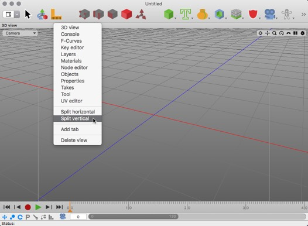

ウインドウレイアウトマネージャ
このセクションでは、Cheetah3D のウインドウレイアウトをあなたの利用方法に合うように簡単に変更できる事をご説明いたします。ウインドウレイアウトはモデリング用、アニメーション用、その他の利用方法など様々に変える事が出来ます。
ウインドウレイアウトはツールバーの "Layout" プルダウンメニューボタンから行うか、メニューコマンド "ウインドウ->レイアウト->..." から変更する事が出来ます。

カスタムレイアウトを登録するには、まずツールバーの "Layout" プルダウンメニューボタンから "カスタムレイアウト 1" を選択します。大きな 3D ビューが現れるはずです。
次に、3D ビューのタイトルバー上で "ctrl + クリック" してください。すると、現れたコンテキストメニューに垂直に分割または水平に分割する項目が出てきます。ここでは例として垂直に分割を選択しました。

"垂直に分割" コマンドを実行すると 3D ビューは二つに分割されているでしょう。では、ビュータイプを変更してみます。右側のビューのタイトルバー上で、再び "ctrl + クリック" してください。今回はメニュー内から "UV エディタ" を選択してみました。

現在、3D ビューの右側は "UV エディタ" ビューに変わっているはずです。ここで再びこの新たに作成された "UV エディタ" ビューを分割する事も出来ます。 しかし、もっとスマートにタブを使用してみましょう。"UV エディタ" ビューのタイトルバー上で "ctrl + クリック" して、コンテクストメニューから "新規タブ" を選択します。
"UV エディタ" のタイトルバーはタブビューの中に入りました。先ほどと同様にタブビューの内容を編集する事が出来ます。

最後に、いま作成したレイアウトを保存しましょう。ツールバー上の "Layout" プルダウンメニューボタンから "レイアウトの保存" コマンドを使用してください。これであなたが新しく作成したレイアウトが保存されました。